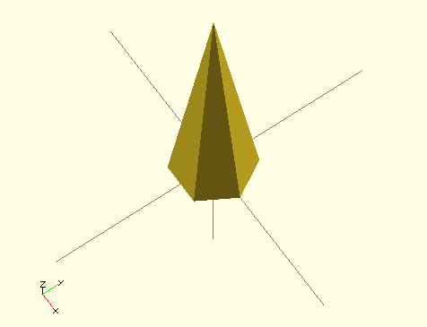

Disseny 3D: OpenSCAD#
Pàgina en desenvolupament
Encara estem treballant en aquest document.
Esperem oferir-vos properament el seu contingut.
Disculpeu les molèsties.
OpenSCAD es un programari de disseny 3D CSG: els objectes es construeixen realitzant operacions booleanes sobre figures senzilles: esferes, ortoedres, cons …
Trobareu molts tutorials a la Internet. Cal destacar els generats per Juan González Gómez (Obijuan):
Wiki |
YouTube |
|---|---|
Figures geomètriques bàsiques#
cube#
En realitat genera un ortoedre, ortòedre o cuboide, es a dir, d’un paral·lelepípede on tots els angles són rectes (capsa de sabates).
Per defecte la figura no està centrada.
Ús:
Ortoedre
cube([llargada,amplada,altura]);
Cub
cube(10);
Exemple:
cube([60,20,40]);
genera un cuboide de 60 mm de llargada per 20 mm d’amplada per 40 mm d’altura

cube(30);
genera un cub de 30 mm de costat
cylinder#
Permet generar cilindres, troncs de cons, cons, prismes de n cares, troncs de prisma de n cares i piràmides de n cares.
Per defecte la figura està centrada.
Ús:
Cilindres
cylinder (h=altura, r=radi, $fn=ressolució);
Troncs de con
cylinder (h=altura, r1=radi inferior, r2=radi superior, $fn=ressolució);
Cons
cylinder (h=altura, r1=radi inferior, r2=0, $fn=ressolució);
Prisma de n cares
cylinder (h=altura, r=radi en que està inscrita la base, $fn= nombre de cares);
Tronc de prisma de n cares
cylinder (h=altura, r1=radi en que està inscrita la base, r2=radi en que està inscrita la cara superior, $fn= nombre de cares);
Piràmide de n cares
cylinder (h=altura, r1=radi en que està inscrita la base, r2=0, $fn= nombre de cares);
Exemples:
cylinder (h=60, r=10, $fn=48);
genera un cilindre d’altura 60 mm amb un radi de 10 mm i aproximant amb 48 cares el contorn circular
cylinder (h=30, r1=10, r2=5, $fn=48);
genera un tronc de con d’altura 30 mm amb un radio de 10 mm a sota y de 5 mm a dalt i aproximant amb 48 cares el contorn circular
cylinder (h=60, r1=10, r2=0, $fn=48);
genera un con d’altura 60 mm amb un radi de 10 mm a la base i aproximant anb 48 cares el contorn circular
cylinder (h=60, r=10, $fn=6);
genera un prisma hexagonal d’altura 60 mm amb la base inscrita en un radi de 10 mm i amb un vèrtex orientat segons l’eix x
cylinder (h=30, r=10, $fn=6);
genera un tronc de prisma hexagonal d’altura 30 mm amb la base inscrita en un radi de 10 mm, l’hexàgon superior inscrit en un radi de 5 mm i amb un vèrtex orientat segons l’eix x
cylinder (h=60, r1=10, r2=0, $fn=6);
genera una piràmide hexagonal d’altura 60 mm amb la base inscrita en un radi de 10 mm i amb un vèrtex orientat segons l’eix x

Transformacions geomètriques#
Totes les figures agafen com a referència un punter a l’origen que té com a coordenades [0,0,0]. Si volem moure la figura caldrà fer un translació, i si volem canviar la seva orientació caldrà fer una rotació. De vegades ens interessarà una simetria especular com la que produeix un mirall.
translate#
Realitza una translació, es a dir, un desplaçament de la figura.
Ús:
translate ([desplaçament x, desplaçament y, desplaçament z])
fixeu-vos que l’ordre no porta un punt i coma final. De fet, podem entendre aquesta ordre com un prefix a l’ordre qeu genera la figura (cube, cylinder …).
Exemple:
translate([0,0,30]) cylinder(h=60, r1=10, r2=0);
genera un cub desplaçat 10 mm a l’eix x, 20 a l’eix y i 30 a l’eix z.
rotate#
Realitza girs segons els eixos x, y i z. El sentit del gir ve determinat per la regla del cargol. L’amplitud del gir s’expressa en graus.
Ús:
rotate ([gir perpendicular eix x, gir perpendicular eix y, gir perpendicular eix z)
fixeu-vos que l’ordre no porta un punt i coma final. De fet, podem entendre aquesta ordre com un prefix a l’ordre qeu genera la figura (cube, cylinder …).
Exemple:
rotate([0,90,0]) cylinder(h=60, r1=10, r2=0);
genera un cub girat 90º en el pla perpendicular a l’eix y.
mirror#
Realitza una simetria especular respecte a un pla, que s’expressa per un vector perpendicular.
Ús:
mirror ([x,y,z])
on [x,y,z] és un vector perpendicular al pla de simetria.
Fixeu-vos que l’ordre no porta un punt i coma final. De fet, podem entendre aquesta ordre com un prefix a l’ordre qeu genera la figura (cube, cylinder …).
Exemple:
cylinder (r1=10, r2=0, h=30);
mirror ([0,0,1]) cylinder (r1=10, r2=0, h=30);
Genera un cilindre i la seva imatge especular respecte al pla xy

Operadors booleans#
union#
Forma una nova figura afegint diferents cossos, que poden solapar-se.
Ús:
union() {
figura1;
figura2;
.../...
figuraN;
}
Exemple:
union () {
cylinder (h=30, r=10);
translate ([0,0,30]) cylinder(h=30, r1=10, r2=0);
}
Forma una nova figura composta per un cilindre i un con al damunt seu.

difference#
Resta una figura d’una altra. Molt útil per fer forats a figures.
Ús:
difference () {
figura1;
figura2;
}
Exemple:
difference() {
cylinder (h=30, r=10);
translate ([-10,-5,0]) cube ([20,10,15]);
}
Crea un cilindre i li resta un ortoedre.
Podem agrupar figures abans de restar-les:
difference() {
union () {
cylinder (h=30, r=10);
translate ([0,0,30]) cylinder(h=30, r1=10, r2=0);
}
translate ([-10,-5,0]) cube ([20,10,15]);
}
intersection#
Genera una figura amb l’espai comú a dues figures.
Ús:
intersection () {
figura1;
figura2;
}
En aquest exemple arrodonim els costats d’una capsa amb un cercle de igual diàmetre que la llargària:
intersection(){
cube([60,20,10], center=true);
cylinder (r=30, h=10, $fn=48);
}
Iteracions#
for#
intersection_for#
Pressa de decisions#
if#
else#
?:#
Operacions matemàtiques#
+ - * /#
%#
–> mòdul
cos() sin() tan()#
–> angles en graus
acos() asin() atan()#
abs()#
ceil()#
–> arrodoniment per defecte
floor#
–> nombre sencer inferior (difereix de ceil per a nombres negatius)
round()#
–> arrodoniment
exp() ln() log()#
pow(x,y)#
–> potencia x elevat a y
sqrt()#
–> arrel quadrada
Llibreríes#
Podem crear llibreríes amb paràmetres
Afegir una cremallera a una peça#
De vegades volem afegir una cremallera que permeti moure amb un pinyó acoblat a un motor una peça (porta, cabina d’ascensor…) que hem dissenyat per a una maqueta.
Els engranatges que fem servir al taller són de mòdul 1 (p=3,14 mm) i hem preparat una llibreria que podem afegir al nostre disseny. únicament cal modificar els paràmetres a (amplada en mm) i cridar el mòdul cremallera amb el nombre de dents que volem (16 dents fan uns 50 mm de cursa).
p=3.14;
d=4.2;
a=8;
h=4.8;
b=1;
cremallera (32);
module cremallera(dents) {
intersection (){
cube ([dents*p,a,h]);
{
for (i=[0:1:dents]) {
translate ([i*p,0,0]) dentcrem ();
}
}
}
}
module dentcrem (){
cube ([p,a,b]);
translate ([-p/2,0,b]) rotate([-90,30,0]) cylinder(r=d,h=a,$fn=3);
}
Crear biblioteques de figures#
De vegades ens interessa crear les nostres figures i reutilitzarles sovint. Amb module() podem crear les nostres pròpies figures per inserir-les en els nostres projectes. Veiem un exemple
// prisma de base triangular amb angle recte a [0,0,0]
module prisma3(tb,th,lz) {
polyhedron(
points=[ [tb,0,0], [0,0,0], [0,th,0],
[tb,0,lz],[0,0,lz], [0,th,lz] ],
faces= [ [0,2,1],
[3,4,5],
[0,1,4], [0,4,3],
[1,2,5], [1,5,4],
[0,3,5], [0,5,2] ]
);
}
// Exemple d'ús:
prisma3(20,10,40);
Repositoris a la Internet: Thingiverse#
A Thingiverse trobareu més de 10000 dissenys amb OpenSCAD. Un dels motius és que en aquesta plataforma pots parametritzar els dissenys OpenSCAD i adaptar-los al teu gust: